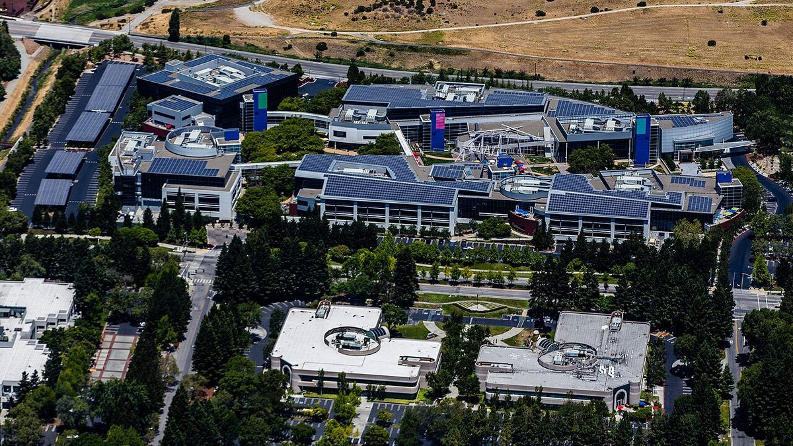

Google opens Carbon to all paying users and shows it proving Signal's code
The model Google first gave to a small group of cyber defenders is now in its API, its business products and its top consumer tier. Google's leaders led with formal proofs, an old video game and the chips underneath.
Sundar Pichai @sundarpichai · CEO, Google and Alphabet
Pichai announced the wider release at 11:04am EST:
"Gemini 4 Carbon is rolling out today. It’s built for sustained, long-horizon tasks, reasoning deeply through complex software engineering, cybersecurity, and scientific discovery. Coming globally via the Gemini API in @GoogleAIStudio and Gemini for business, and for Ultra subscribers in @antigravity, the @GeminiApp, and AI Mode in Search."
Google's announcement, by Koray Kavukcuoglu, Google's chief AI architect, says Carbon went to cyber defenders through Google's Fairwind program two weeks ago. It says Carbon ranks first on CursorBench 4.0, Perplexity's WANDR and Zapier's AutomationBench at "more than 2X lower cost per task," and second on Artificial Analysis's new MKA benchmark at more than six times lower cost.
Pichai's biggest claim came at 12:28pm EST:
"Our teams put Gemini 4 Carbon to work on a major security challenge: mathematically proving the code underlying the Signal protocol. Using AlphaProof Code, @GoogleDeepMind researchers guided agents to verify the protocol down to compiled device code, closing the gap where real bugs hide."
He listed the results: more than six million lines of proofs in Lean, a language whose checker confirms every step; "years of expert manual verification compressed to just weeks"; and about 1% of the codebase needing human review. The Signal protocol encrypts messages in the Signal app and many other messengers. DeepMind's write-up says the work took four weeks and is the first time the implementation of a widely used protocol like this has been formally verified by any method. Google is open-sourcing the proofs.



Demis Hassabis @demishassabis · CEO, Google DeepMind
A year ago Hassabis rebuilt a test version of Theme Park, his 1990s game, with Gemini 3. At 12:41pm EST he wrote:
"Our latest frontier model Gemini 4 Carbon is rolling out today! Amazing progress from Gemini 3 → Gemini 4 in less than a year… Carbon reverse engineers my original Theme Park binaries, adds a new DeepMind themed ride, and ports it to the web in one shot - kind of mindblowing to see!"
Amin Vahdat, Google's chief technologist for AI and infrastructure, added that Carbon was "trained 100% on Google TPUs," its Tensor Processing Unit chips.